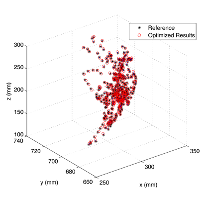

<!DOCTYPE html PUBLIC "-//W3C//DTD XHTML 1.0 Transitional//EN" "http://www.w3.org/TR/xhtml1/DTD/xhtml1-transitional.dtd">
<html xmlns="http://www.w3.org/1999/xhtml" lang="en" xml:lang="en">
<head>
	<meta http-equiv="content-type" content="text/html; charset=utf-8" />
	<meta name="description" content="MSC Lab Homepage" />
	<meta name="keywords" content="mechanical,systems,control" />
	<meta name="author" content="Raechel Tan" />
    <link rel="icon" href="../../../mscicon.ico" />
    <link href='http://fonts.googleapis.com/css?family=PT+Sans|Brawler' rel='stylesheet' type='text/css' />
	<link rel="stylesheet" type="text/css" href="../../../style.css" media="all" />
	<title>MSC Lab - 6-DOF Passive Exoskeleton for Macaque Upper-limb</title>
</head>

<body>
<div id="container980"><!-- Use"containerfull" for 100% width. For fixed width, use "container980", "container760" or "container600" (the number is the layout width in pixels). -->
	<div id="header">
    	
	</div>
	<div id="menu"> 
		<ul>     
			<li><a href="../../../index.html">Home</a></li>
			<li><a href="../../../people.html">People</a>
            	<ul>
                	<li><a href="../../../people/tomizuka.html">Prof. Masayoshi Tomizuka</a></li>
                    <li><a href="../../../people/students.html">Students</a></li>
                    <li><a href="../../../people/visitors.html">Visitors</a></li>
                    <li><a href="../../../people/alumni.html">Alumni</a></li>
                    <li><a href="../../../people/prev_visitors.html">Previous Visitors</a></li>
                </ul>
            </li>
			<li><a class="current" href="../../../research.html">Research</a>
            	<ul>
                	<li><a href="../../robotics.html">Robotics</a></li>
                    <li><a href="../../human.html">Human Mechatronics</a></li>
                    <li><a href="../../disk.html">Hard Disk Drive Control</a></li>
                    <li><a href="../../precision.html">Precision Motion Control</a></li>
                    <li><a href="../../automotive.html">Automotive Control Systems</a></li>
                    <li><a href="file:///C|/Users/Raechel 2/Dropbox/research.html">more...</a></li>
                </ul>
            </li>
            <li><a href="../../../publications.html">Publications</a>
            	<ul>
                	<li><a href="../../../publications/papers_robotics.html">Robotics</a></li>
                    <li><a href="../../../publications/papers_human.html">Human Mechatronics</a></li>
                    <li><a href="../../../publications/papers_disk.html">Hard Disk Drive Control</a></li>
                    <li><a href="../../../publications/papers_precision.html">Precision Motion Control</a></li>
                    <li><a href="../../../publications/papers_automotive.html">Automotive Control Systems</a></li>
                    <li><a href="../../../publications.html">more...</a></li>
                </ul>
            </li>
            <li><a href="../../../resources.html">Resources</a>
            	<ul>
                	<li><a href="../../../resources/news.html">News and Announcements</a></li>
                    <li><a href="../../../resources/network.html">Network and Printing</a></li>
                    <li><a href="../../../resources/courses.html">Prof. Tomizuka's Courses</a></li>
                    <li><a href="../../../resources/conferences.html">Upcoming Conferences</a></li>
                </ul>
            </li>
            <li><a href="../../../misc.html">Miscellaneous</a>
            	<ul>
                	<li><a href="../../../misc/logo.html">MSC Logo</a></li>
                    <li><a href="../../../misc.html">more...</a></li>
                </ul>
            </li>
            <li><a href="../../../contact.html">Contact Us</a></li>
		</ul>
	</div>

	<div id="main">
    	<div id="navtree">
			<p><a href="../../../research.html">Research</a> &gt; <a href="../human.html">Human Mechatronics</a> &gt; <a href="../BMI_exo.html">Exoskeleton Design &amp; Control for BMI Study</a> &gt; <a href="BMI_exo_passive.html">6-DOF Passive Exoskeleton for Macaque Upper-limb</a></p>
		</div>
    
		<div id="content">
        	<div id="sidebar">
			<div class="sidebarbox">
               <h3>Contents:</h3>
				<ul class="sidemenu">
					<li><a href="#motivation">Motivation and Approach</a></li>
                    <li><a href="#results">Main Results</a></li>
                    <li><a href="#pub">Recent Key Publications</a></li>
				</ul>
			</div>
			</div>

          <h2>6-DOF Passive Exoskeleton for Macaque Upper-limb</h2>
		  <h3 id="motivation">Motivation and Approach</h3>
		  <p>When operated in tracking mode where macaque's arm is free to do arbitrary motion, a singularity-free design of the shoulder complex is essential for both precise tracking and safety concerns. To achieve this, a 6-DOF passive prototype exoskeleton with 4 DOFs at the shoulder complex is proposed and fabricated.</p>
		  <p>The following studies are further conducted:</p>
		  <ol class="listparagraph">
		    <li>Kinematics is analyzed for the proposed shoulder complex model</li>
            	<ol class="listparagraphletters">
                	<li>Manipulability comparison is conducted with other designs of different DOF assignments</li>
                	<li>Feasibility of singularity and joint limits avoidance during tracking task is veried based on backward reachability analysis</li>
                </ol>
		    <li>Home positions of incremental encoders are calibrated based on an external optical mocap system</li>
            	<ol class="listparagraphletters">
                	<li>Encoder initial offsets are identified by solving a nonlinear least squares problem</li>
                	<li>Cross-validations are completed using data sets from different experimental sessions</li>
                </ol>
          </ol>
		<p align="center"><br />
		  <strong>6-DOF passive upper-limb exoskeleton</strong><br />
		(CAD model with coordinate frames; simplied joint model; physical hardware design implementation)</p>
		<p align="center">&nbsp;</p>
		<p align="center"><br />
		  <strong>Structure of the real-time data acquisition system</strong><br />
		  (exoskeleton, encoders; target PC, LabVIEW Real-time and FPGA modules; host PC, LabVIEW and SolidWorks) </p>
		<p>&nbsp;</p>
		  <h3 id="results">Main Results</h3>
		  <ol class="listparagraph">
		    <li>Each posture’s possession of dierent levels of manipulabilities due to redundancy makes it possible to avoid singularities by properly planning the trajectories in tracking task. The figure below, left shows that the proposed model is able to achieve its maximum manipulability in each direction on the horizontal plane [1].</li>
		    <li>By regarding unpredictable macaque's desired task space motion as disturbance, exoskeleton joint space trajectory as control input, game theory based backward reachability analysis demonstrates that there always exists a joint trajectory along which system will not enter unsafe neighborhood of singularity and joint limits for the normal BMI task workspace [1].</li>
		    <li>RMS error of the calibrated 3D end point position is approximately 2 mm. The figure below, right is a plot of sampled marker positions in the mocap camera frame for both reference data and data generated with identied encoder parameters.</li>
	      </ol>
          <table width="100%" border="0">
            <tr>
              <td width="52%" align="left"></td>
              <td width="48%" align="right"></td>
            </tr>
          </table>
          <p>&nbsp;</p>
          <h3 id="pub">Recent Key Publications</h3>
		  <ol>
		    <li>J. Lu, W. Chen, and M. Tomizuka, &quot;Kinematic Design and Analysis of a 6-DOF Upper Limb Exoskeleton Model for a Brain-Machine Interface Study,&quot; in <em>Proceedings of the 6th IFAC Symposium on Mechatronic Systems</em>, pp. 293-300, 2013 <strong>(Best Student Paper Finalist)</strong></li>
	      </ol>
      </div>
		<div class="clear">&nbsp;</div>
	</div>

	<div id="credits">
		<p>&copy; 2015 Mechanical Systems Control Laboratory &nbsp;&nbsp; | &nbsp;&nbsp; <a href="mailto:dwai213@berkeley.edu" target="_blank">Contact the Webmaster</a></p>
	</div>
</div>
</body>
</html>